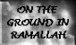

PERSONAL STORIES
"To build a house for his children"
Rizeq Zeidan Al Hawajrah, aged 25, Deir Al-Balah, Gaza Strip
Right: Rizeq in a Gaza photo studio.
Rizeq was a construction worker. He had only completed sixth grade and was the eldest in the family. His father was a very old man so Rizeq had to support the family. He married twice, the first marriage didn't succeed but with his second wife he was happy and had three children, two girls and a boy. He loved his family and worked very hard to provide a good life for them. Whenever a closure prevented him from reaching work, he would search for other ways of earning a living.
Rizeq had three brothers. His brother Yusef was the closest to him. Yusef said that he loved Rizeq because of his simplicity, kindness and his great love of people. Another brother Rabi', 23, has been in an Israeli prison since his arrest during the Intifada. For the last five years, they had not seen each other because visits had been forbidden by the Israeli occupation authorities. Rizeq himself was placed in administrative detention (arrest without trial or charge) for 5 months during the Intifada.
Rizeq lived with his family in the same house as his brothers and father. Rizeq's dream was to live in a separate house with his family and to secure the future of his daughters, son and another child they were expecting soon. She was born soon after his death and was named Fatmeh.
Every day, when he returned from work, his children would race to meet him at the end of the street. After a short rest he would go out to meet friends to chat and talk about the day's events. Then he would go back to the house and watch TV with his family. His favourite TV programs were serials.
His friends still remember how they would try and convince him to stay longer with them but he always refused, explaining that he wanted to go back home to see his three children Manal , Wafa' and Mohammed. He felt that if he stayed out late he wouldn't see them because they would be in bed.
On Thursday 26 September 1996, he was shot in the back through his kidney with live ammunition. He died instantly. The night before he died his little daughter Wafa' spent the whole night crying and insisting on staying with her father.
His brother Rabi' read the news of Rizeq's death while following the news of the clashes from his cell in the Israeli prison.
Rizeq's father is an old man. As he spoke of Rizeq, tears found their way through the deep furrows covering his wizened face, "In losing Rizeq I feel I lost a part of my life. It is true that I love all of my sons but Rizeq was my first son and my first happiness. I can't believe he suddenly disappeared and left us." Rizeq's wife interrupted, "Rizeq didn't disappear and he has never left us for a single day because every corner in this house reminds me of him." She points to a simple mattress lying on the ground, "He always liked to sit there and in this room he used to sleep."
Back to PERSONAL STORIES or on to the NEXT STORY